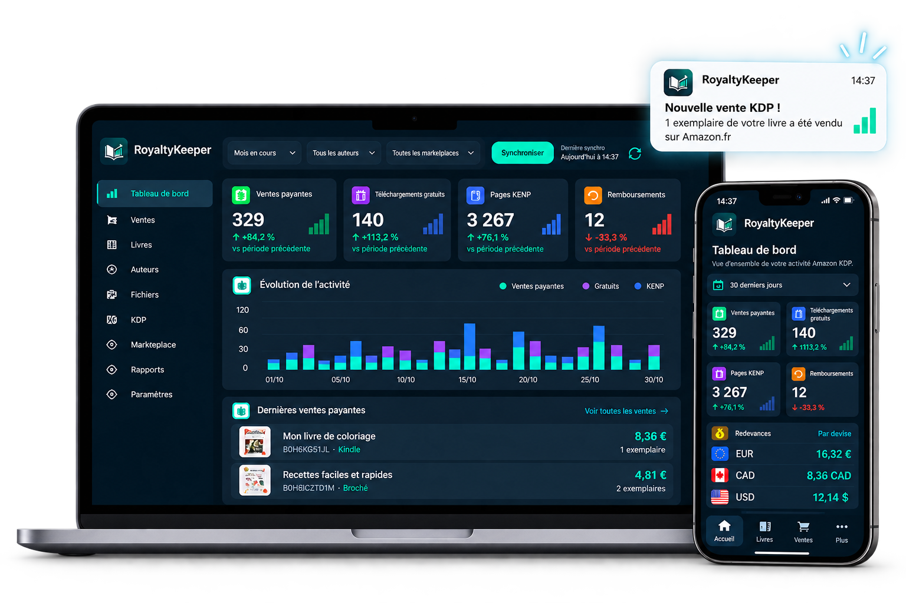

← RETOUR AUX PROJETS
PROJET / 04
ROYALTYKEEPER
Vos ventes KDP. Enfin lisibles.
RoyaltyKeeper 1.5 centralise vos données Amazon KDP dans un tableau de bord clair, accessible sur ordinateur et Android. Ventes Kindle et papier, téléchargements gratuits, remboursements, pages KENP, royalties par devise et performances de vos livres sont réunis dans une seule interface. Suivez votre activité éditoriale, analysez vos résultats et recevez des notifications de nouvelles ventes sur Android après synchronisation.
ROYALTYKEEPER 1.5 — EN LIGNE
Découvrir RoyaltyKeeper →
L’ESSENTIEL
DES DONNÉES DISPERSÉES.
UNE VISION CLAIRE.
Ventes et téléchargements
Consultez vos ventes Kindle et papier, vos téléchargements
gratuits et vos remboursements depuis une seule interface.
Retrouvez rapidement l'activité de vos livres.
Redevances multidevises
Suivez vos royalties Amazon KDP par devise, sans conversion
artificielle. Visualisez vos revenus et leur évolution
selon la période sélectionnée.
Pages KENP
Analysez les pages lues grâce à Kindle Unlimited
et identifiez les titres qui contribuent
aux performances de votre catalogue.
Livres et auteurs
Explorez les performances de vos livres et auteurs.
Retrouvez vos résultats par titre, format
et période pour mieux comprendre votre activité.
Marketplaces Amazon
Suivez votre activité sur les différentes boutiques Amazon.
Identifiez les marketplaces qui génèrent des ventes,
des lectures et des redevances.
Web et Android
Consultez vos statistiques sur ordinateur ou Android
avec un seul compte. Recevez des notifications
lorsque de nouvelles ventes sont détectées
après synchronisation KDP.
LLOYD DIGITAL STUDIO